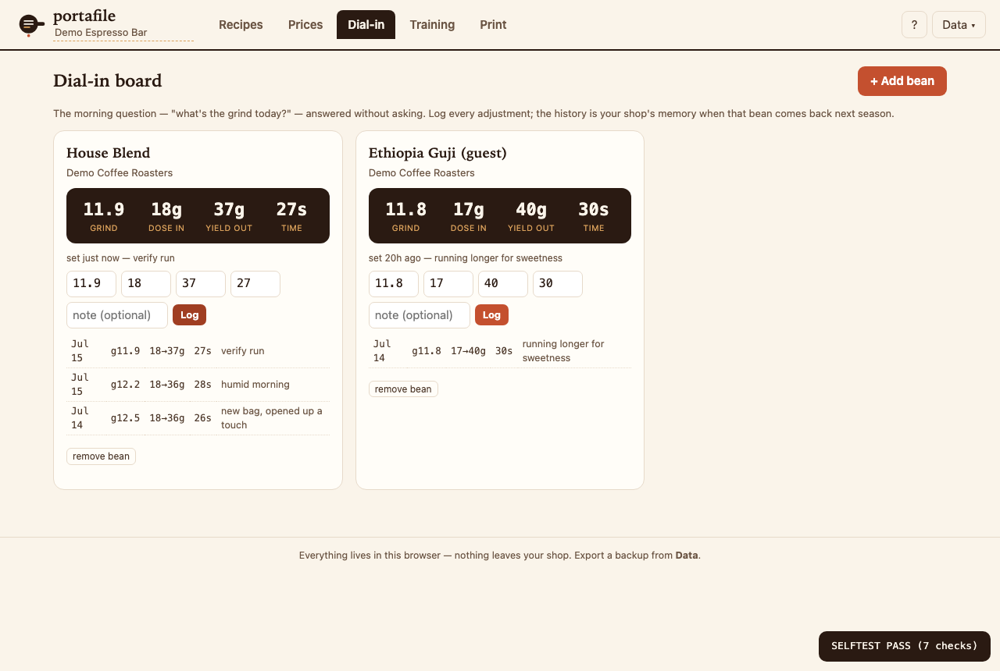

One tool, three jobs your binder can't do.
Cards that know their cost
Type what you pay for milk, beans and cups once. Every recipe card shows drink-level cost, margin and COGS% — and re-prices itself the moment an ingredient price moves. When your bean supplier raises prices, you'll know which drinks went underwater before the till does.
A dial-in board with memory
Grind, dose, yield, time — logged per bean in five seconds. The board always shows the current setting, every card carries it, and the history is still there when that Ethiopia comes back next season.
A new-hire pack in ten minutes
Order your training path, hit print: cover page, day-by-day checklist, every recipe card, today's dial-ins. Sign-offs tracked per barista. The knowledge stops walking out the door with whoever wrote the old binder.
Green coffee doubled. Your laminated price list didn't notice.
Arabica peaked at $4.41/lb in 2025 — a historic high — and the average shop keeps 11 cents of every dollar. At margins like that, "roughly $1 a latte" isn't a costing strategy. Portafile makes the real number ambient: on every card, every day, at today's prices.
Sources: Perfect Daily Grind (Feb 2026) · coffeedasher.com industry statistics. Full citation list in the repo.


Paper survives the rush. The app keeps it honest.
Nobody unlocks a phone with wet hands at 7:58am. Portafile prints laminated-ready cards, a one-page station sheet and the full new-hire pack — while the app stays the living source of truth, so the paper is never the stale version again. (The printed cards hide your costs. The margin report is the owner-only page.)
Pricing that respects an 11% margin.
Flat per shop. Never per seat — we don't tax you for having to hire again.
Local
- Everything: cards, costing, dial-in board, training packs, printing
- Lives entirely in your browser
- JSON backup & restore
Shop
- Synced across the shop's devices
- Secret-link sharing for staff phones
- Sign-off history & margin trends
- One flat price per location
Roaster Partner
- White-label Portafile as your onboarding gift to cafe accounts
- Your beans + recommended dial-ins pre-seeded
- Update a seasonal spec once — every account's board follows
The Local tier is the product you can open today. Shop & Roaster tiers ship after founding-shop validation — pricing shown is the plan of record.
Fair questions
Where does my data live?
In your browser (localStorage), on your machine. Nothing is uploaded anywhere. Export a JSON backup from the Data menu and keep it with your shop docs. The paid Shop tier adds sync — that's the point of it.
Why is the Local version free? What's the catch?
No catch: it's free the way a sample bag is free. If Portafile earns a place taped to your machine, the synced Shop tier is where we make our living. If it doesn't, you lost nothing.
Couldn't I just use Google Docs?
You could — shops have been able to for 15 years, and (as one 7-year specialty owner put it) 9 of 10 shops they visit still have no standards. Docs won't compute your margin at today's milk price, won't remember your grind setting, and won't print a 4×6 card. The blank page is the enemy; Portafile starts you with 15 editable drinks.
What about my ten locations?
Portafile is deliberately single-shop-first — that's who's underserved. A Group tier (2–5 locations) is on the plan of record.
Do my baristas need accounts?
No accounts anywhere. Baristas use the printed packs, or the shop device. Sign-offs are tracked by name, not login.